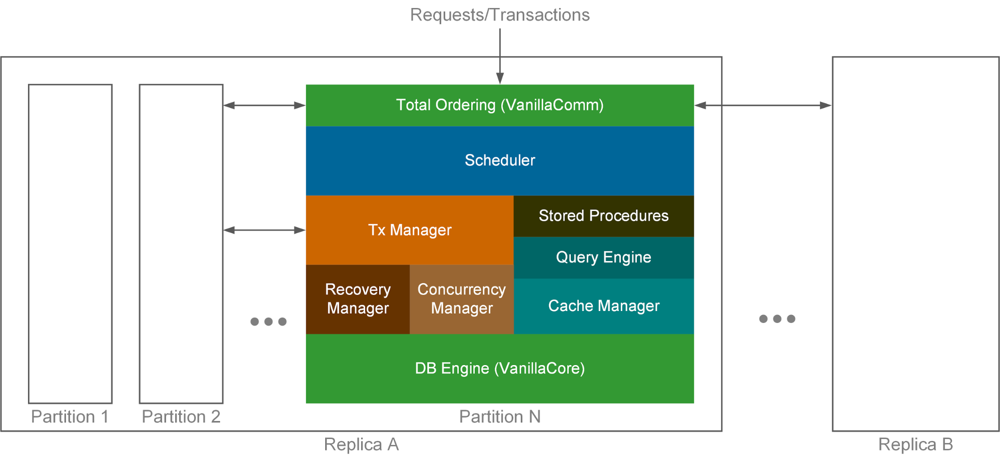

ElaSQL is a distributed relational database system prototype that aims at offering high scalability, high availability, and elasticity to the on-line transaction processing (OLTP) applications.
To achieve high scalability, availability, and elasticity (SAE for short), many recent database systems (collectively, NoSQL) drop the support of relational data model and distributed transactions. The relational data model is replaced by less expressive key-value pairs (Redis), documents (MongoDB), or entity-groups (bigtable, cassandra). And the application developers are required to code around distributed transactions when necessary, adding complexity to the applications.
ElaSQL does not trade the relational model and distributed transactions for SAE. Instead, it gives up ad-hoc transactions, i.e., transactions whose operations may be determined after start. Today, OLTP application developers (e.g., web application developers) usually design their transactions carefully and issue transactions via stored procedures. Therefore, it’s worthy to explore new system design that exchanges ad-hoc transactions for better SAE.
To cite ElaSQL, please add one of the following to your BibTex:
@inproceedings{shwu2016tpart,
title={T-Part: Partitioning of Transactions for Forward-Pushing in Deterministic Database Systems},
author={Shan-Hung Wu and Tsai-Yu Feng and Meng-Kai Liao and Shao-Kan Pi and Yu-Shan Lin},
booktitle={Proceedings of the 2016 ACM SIGMOD International Conference on Management of Data (SIGMOD)},
year={2016},
organization={ACM}
}
@article{yslin2019mgcrab,
title={MgCrab: transaction crabbing for live migration in deterministic database systems},
author={Yu-Shan Lin and Shao-Kan Pi and Meng-Kai Liao and Ching Tsai and Aaron Elmore and Shan-Hung Wu},
journal={Proceedings of the VLDB Endowment},
volume={12},
number={5},
pages={597--610},
year={2019},
publisher={VLDB Endowment}
}
@inproceedings{yslin2021hermes,
title={Don't Look Back, Look into the Future: Prescient Data Partitioning and Migration for Deterministic Database Systems},
author={Yu-Shan Lin and Ching Tsai and Tzyu Lin and Yun-Sheng Chang and Shan-Hung Wu},
booktitle={Proceedings of the 2021 ACM SIGMOD International Conference on Management of Data (SIGMOD)},
year={2021},
organization={ACM}
}
ElaSQL runs on multiple datacenters, each of which owns a full replica of data. Within each datacenter, the data are partitioned and placed on a cluster of machines/nodes. ElaSQL supports relational model and does not require data to be perfectly partitionable. It handles distributed transactions across partitions in a replica. Therefore, it is suitable for complex, large-scale OLTP applications such as real-time data analysis, financial, and social networking services.
Without serving ad-hoc transactions, ElaSQL is able to pre-order the transaction requests totally (i.e., across all replicas/datacenters and partitions/machines). It then executes the transactions while making sure that the net effect will be equivalent to that of serial execution of transactions following the total order. To do so, the Scheduler on each machine, once getting the total-ordered transaction requests, decides which transactions are “relevant” ones that should be handled by the Transaction Manager residing on the same machine. Once the relevant transactions are determined, the Transaction Manager executes these transactions concurrently using multiple threads, and, in the presence of distributed transactions, communicate with other machines (within the same datacenter) holding different data partitions.
ElaSQL assumes that datacenters are geographically separated across WAN to sustain the failure of an entire datacenter. Different from most traditional distributed relational database systems which adopt Lazy-replication techniques giving only weak consistency between replicas, ElaSQL ensures that the replicas are always strongly consistent. It achieve so by making the results of transaction execution on each machine deterministic to the total order; that is, regardless of transaction rollback, deadlock, machine failure, or any other events, the final results on each machine will be the same as those of serial transaction execution following the total order. ElaSQL implements many techniques proposed by the Calvin paper to achieve determinism, and with that ElaSQL can avoid any agreement protocol (e.g., two-phase commit (2PC)) running at the end of each transaction.
Note that the total-ordering comes at the cost of delay (usually hundreds of milliseconds). So the transaction latency given by ElaSQL may be higher than that of lazy alternatives. However, as compared to traditional eager-replication techniques (e.g., those running 2PC), this delay does not count into the contention footprint in transaction execution, therefore has no impact on the system throughput.
Inside each datacenter, ElaSQL can readily run on a cluster of hundreds of machines. It implements T-Part as the core scheduling and transaction processing algorithms and handles the distributed transactions in a super lightweight manner. ElaSQL does not support ad-hoc transactions and assumes that each transaction request is issued as a call to a stored procedure. This make it easy to analysis the read set and write set of a transaction before the transaction starts. Furthermore, with the read and write sets, the dependency between transactions can be known early. Based on this dependency, each transaction, when being executed by a Transaction Manager on some machine, knows exactly which later transactions (which may not have started yet) will read its writes, and can push forward the writes to the corresponding machines immediately after commit. Then, upon execution, a later transaction on another machine has no need to stop and fetch remote data because the data were pushed by previous transactions and may have arrived already. This (proactive) forward-pushing replaces the (reactive) data fetching mechanism adopted by traditional distributed database systems (where there is usually a Transaction Coordinator that fetches data required by a transaction from other machines only after the transaction starts) causing transaction stalls due to network latency and drop of system throughput.
ElaSQL is designed to be elastic. It moves data around in a datacenter if some machines become too hot. It also adds/removes machines automatically in correspondence of the workload changes. This makes ElaSQL an economic choice for applications that rent machines in the cloud and face dynamic workloads, as a cloud platform usually charges per resource/machine usage. Currently, we are working on an efficient version of Zephyr, a live data-migration technique. More details will be announced later.
ElasSQL is an open-source project written in Java. The source code is released under the Apache 2.0 license.
Get ElaSQLDB researchers/developers who are interested in this project are welcome to join us. And we love to hear your feedback. Please feel free to contact us at elasql@netdb.cs.nthu.edu.tw.
Copyright © by elasql.org. All rights reserved.
Please contact elasql@netdb.cs.nthu.edu.tw for custom support.